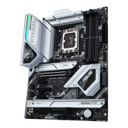
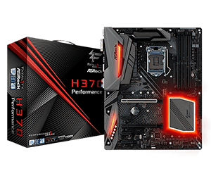
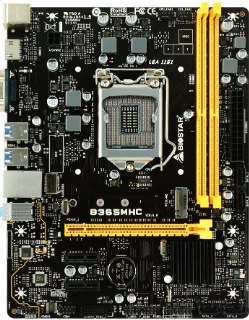

Placas Madre ASUS
Asus es una compañía dedicada a la producción de placas madre, portátiles y otros dispositivos electrónicos
con sede en Taiwán. Fue fundada por los ingenieros Ted Hsu, M. T. Liao, Wayne Tsiah y T. H. Tung en 1989.
Placas Madre Gigabyte
Gigabyte Technology es una compañia desarrolladora de hardware con sede en Taiwan, más conocida por sus
placas madre, pero tambien produce placas graficas.
Placas Madre MSI
Micro-Star International es una compañia de tecnología de la infomación con sede en Nuevo Taipéi, Taiwán.
Desarrolla productos relacionados a tecnologia, los cuales incluyen: placas madre, placas de video,
perifericos de PC, etc.

Placas madre Asrock
AsRock Inc. es uno de los principales fabricantes de placas base para computadoras. También es muy
reconocido por la fabricación industrial de PC y HTPC. Tienen su sede en Taiwán y están presididos por
Ted Hsu. La compañía se estableció en 2002 y actualmente es propiedad de Pegatron.

Placas Base Biostar
Ofrece una variedad de características y funcionalidades diseñadas para mejorar el rendimiento de su
computadora. Estas características incluyen la capacidad de conectar diversos dispositivos, como discos duros,
tarjetas de video y controladores de almacenamiento, y la capacidad de instalar y ejecutar varios sistemas
operativos.
Placas Base NZXT
Es una empresa que se especializa en hardware y periféricos para computadoras, incluidos gabinetes, sistemas de
enfriamiento y fuentes de alimentación. También ofrecen una gama de placas base diseñadas para jugadores y entusiastas.